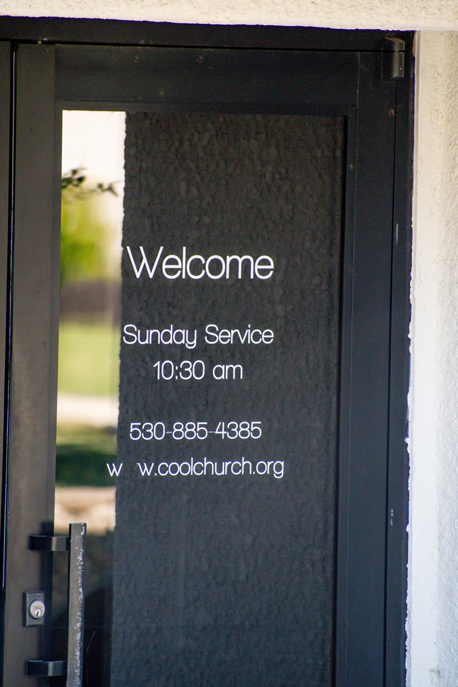
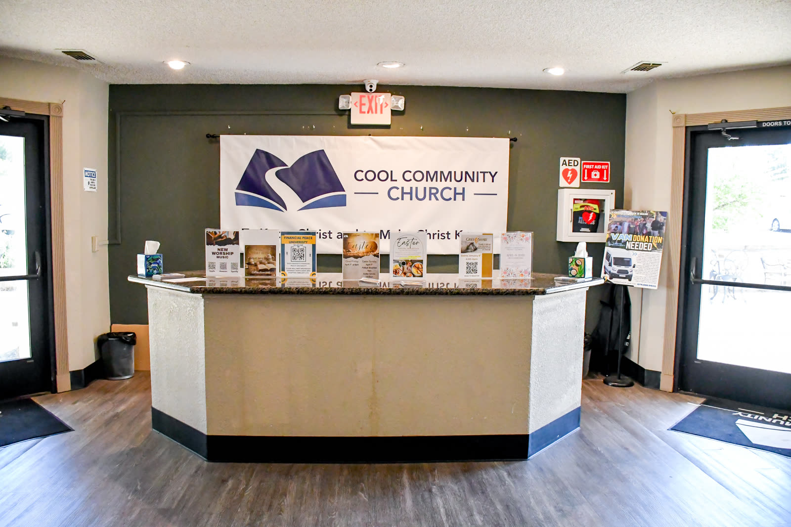
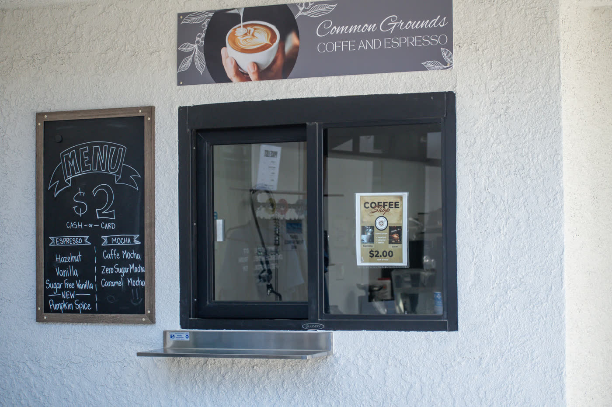
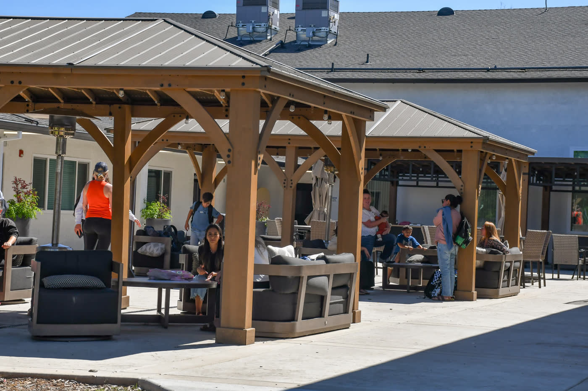
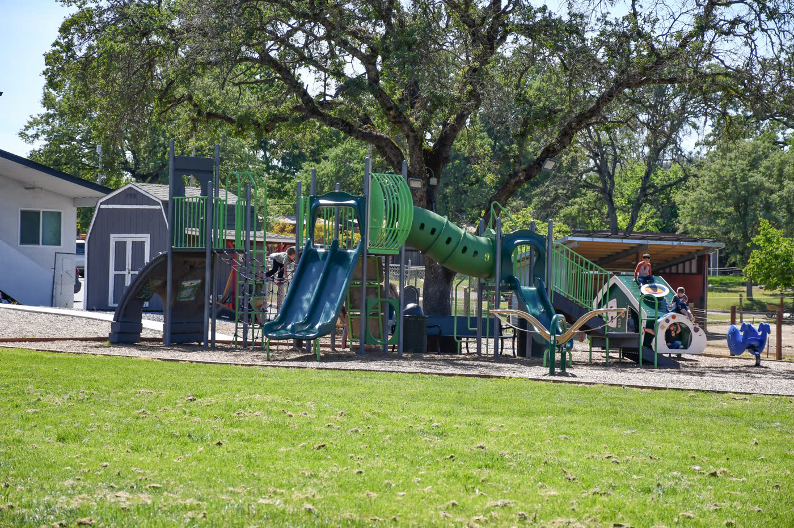

Plan Your Visit
Sunday Morning
If this is your first time with us, we want you to know there is a place for you here.
When & where
- WorshipSundays at 10:30 am, about 90 minutes
- Arrive10 minutes early to park, say hi, grab a coffee and find a seat
- Address863 Cave Valley Rd, Cool, CA 95614
- KidsNursery through 6th grade. Check in at the foyer, and kids go straight to their classrooms. Learn more
What to expect
A warm welcome
Our greeters will hand you a program with the service and this week's events, and our ushers will help you find a seat.
Worship & the Word
We sing a good mix of contemporary and traditional music led by our worship team, then hear a message preached from the Bible.
Stay a while
Plan to hang around after the service for fellowship and meeting new people.
Take a look around
Before you come
Here's what you'll see when you arrive on a Sunday morning.






Common questions
What should I wear?
Whatever you're comfortable in. You'll see everything from jeans to Sunday best.
What do I do with my kids?
Check your kids in at the foyer and they'll go straight to their classrooms, where Children's Church starts with its own time of worship. Babies and toddlers go to the nursery. After the service, check your child out from their classroom. All of our Children's Church volunteers complete MinistrySafe screening. More about Kids & Youth.
How long is the service?
About 90 minutes.
Can I watch online first?
Of course. Watch a recent sermon to get a feel for a Sunday morning.
Next steps
Grow and get connected
Once you've been with us a few Sundays, here are some great ways to get to know people and go deeper.
Next Steps Class
Meet people, learn what we believe, and find where you fit! It's your first step toward small groups, serving, baptism and membership.
Adult Sunday School
Sundays at 9:00 am, before the worship service. We walk through curriculum and study the Word together, a chance to go deeper in faith and closer to one another.
Home Groups
Home Groups make the big Sunday morning feel a little smaller. Groups meet in homes around Cool and the Divide on different nights of the week. Call the office at (530) 885-4385 to find one.
Empty Nesters (55+)
Not "senior adults," and not done. A group for those in a new season who want meaningful worship, community, and to keep serving others for God's glory.
Membership Matters
Ready to call Cool Community home? This class is offered twice a year and covers the church's history, what we believe, and why membership matters. Check the calendar for the next one, or call the office.
Crossroads Counseling
Our counseling center offers a quiet, restorative place for individuals, couples and families to find help. Learn about Crossroads.